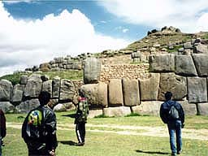
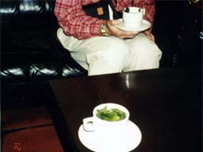
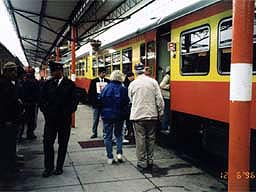

| ソニックチーム南米へ行く（４） | |
|
[ソニックチーム南米へ行く(3)]
５日は高山の中にある街、クスコへ向かう。 クスコはかつてインカ帝国の首都であった街で、滅んでからもなお人々はここに住み続けている。 標高3400メートルの盆地の中に人と家がひしめき合っている感じだ。
６日はさらに山間部の高山に潜む城塞都市「マチュピチュ」へ。かつてあの宮崎駿監督もこの地を訪れたという。
12月７日。最後の目的地である「パチャカマ」へと向かう。高山の薄い空気から解放される。
こうして６人は心身ともに疲れ果てながら約２週間の取材旅行すべての目的地を回り終えた。
今回視察した様々な場所は、「遺跡」という言葉ひとつでまとめられるのだが、それぞれが全く異なる個性と魅力に溢れていた。
この旅から早くも２０ヶ月が経とうとしている。旅によって、彼らのインスピレーションがどのように刺激されたのか。 おわり。 |  あ〜〜酸素うすい。 |
 そんな時はこの「コカ茶」を飲む、と。 |
 すごい！マチュピチュはほんとにあったんだ！ |
 クスコの車窓から。 |
 パチャカマでも、「俺たち！...」 |
おまけ。 |
| SONIC TEAM 1998 | |
<<戻る>>